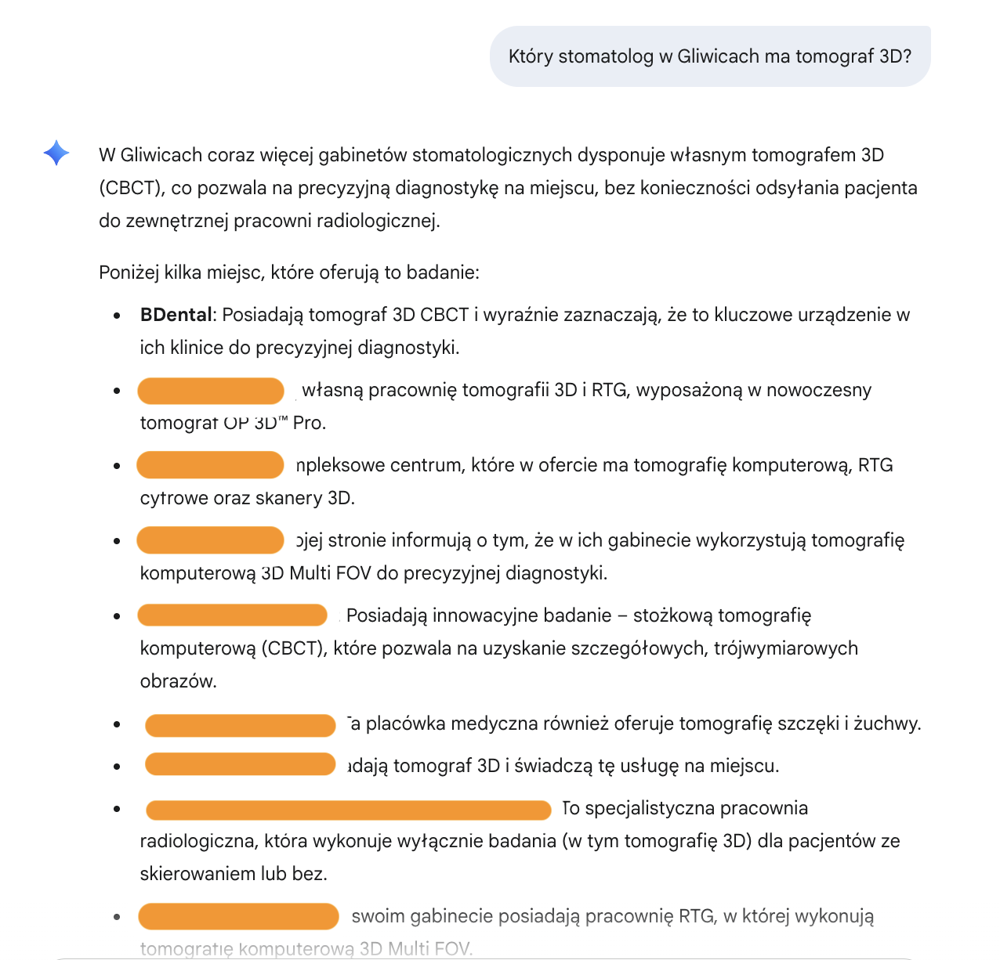

Przetestowaliśmy rynek usług stomatologicznych w Gliwicach. Klinika, która wdrożyła JSON-LD z Collytics, osiąga doskonałe rezultaty w wyszukiwarkach AI.
Test: kto przetrwał selekcję ai?
17 sierpnia 2025 przeprowadziliśmy bezlitosny test. Zadaliśmy systemom AI dokładnie te same pytania o dentystów w Gliwicach. Jeden gabinet - BDental - konsekwentnie pojawiał się na pierwszych miejscach. Dlaczego? Sekret: JSON-LD - dane strukturalne, które sprawiają, że AI "rozumie" Twoją stronę.
Czym jest json-ld?
To kod, który działa jak "wizytówka" dla robotów. Zamiast zgadywać co oznacza tekst na Twojej stronie, AI dostaje precycyjne informacje w formacie, który perfekcyjnie rozumie. JSON-LD (JavaScript Object Notation for Linked Data) to format danych strukturalnych oparty na standardzie Schema.org. Gdy wpiszesz w JSON-LD
"openingHours": "Mo-Fr 09:00-19:00"
, każdy system AI wie, że to dokładnie godziny otwarcia. To jak różnica między chaotyczną notatką a uporządkowaną bazą danych.
Przykład - tak ai widzi twoją stronę:
"Jesteśmy otwarci od poniedziałku do piątku 9-19, ul. Chemiczna 3, Gliwice"
AI myśli: "Hmm, czy to godziny otwarcia czy rejestracji?"
{ "@type": "DentalClinic", "name": "BDental", "address": "ul. Chemiczna 3, Gliwice", "openingHours": "Mo-Fr 09:00-19:00" }AI wie dokładnie: "To klinika dentystyczna, otwarta 9-19!"
Dlaczego Google preferuje JSON-LD? Od 2019 roku oficjalnie rekomenduje ten format jako najlepszy - jest oddzielony od HTML i łatwy w zarządzaniu. Kod po prostu wrzucasz w sekcję
<head>
strony i gotowe.
Wyniki testów: liczby nie kłamią
Test 1: "gdzie mogę leczyć bruksizm w gliwicach?"
Wynik:
BDental - 1. miejsce. Konkurencja bez JSON-LD nie pojawia się w wynikach. Dlaczego? W JSON-LD dodano:
"medicalSpecialty": "Leczenie bruksizmu..."
. AI natychmiast rozpoznało specjalizację.
Test 2: "który stomatolog ma tomograf 3d?"

Wynik:
BDental - 1. miejsce. Konkurencja ma rozproszone wyniki. Sekret:
"amenityFeature": {"name": "Tomograf 3D CBCT", "value": true}
. Konkurenci też mają tomografy, ale AI nie potrafi ich znaleźć w chaosie tekstu.
Test 3: "leczenie pod narkozą w gliwicach"
Wynik:
BDental - Top 2. Konkurencja często pomijana. Kod który wygrał:
"availableService": { "@type": "MedicalProcedure", "name": "Leczenie w narkozie" }
.
Test 4: kompleksowe pytanie

Zapytanie: "Znajdź dentystę który przyjmuje dzieci, ma parking, jest otwarty po 17:00 i ma dobre opinie". BDental spełnił wszystkie kryteria dzięki precyzyjnym danym w JSON-LD. Konkurencja zajęła 3-5 miejsce lub została pominięta.
Twarde dane z testu
| Metryka | Z JSON-LD | Bez JSON-LD |
|---|---|---|
| Pełne dane kontaktowe w AI | 100% | 45% |
| Poprawne godziny otwarcia | 100% | 30% |
| Obecność w odpowiedziach AI | 85% | 15% |
| Widoczne oceny | 90% | 10% |
| Lista usług | 80% | 20% |
Jak to wdrożyć? (minimum vs premium)
Podstawowy json-ld (30 minut pracy):
{
"@type": "DentalClinic",
"name": "Twoja Klinika",
"address": "Twój adres",
"telephone": "+48-123-456-789",
"openingHours": "Mo-Fr 09:00-18:00",
"aggregateRating": {
"ratingValue": "4.8",
"reviewCount": "50"
}
}Premium (przewaga konkurencyjna):
- FAQ w JSON-LD - najcenniejszy element
- amenityFeature - parking, WiFi, dostęp dla niepełnosprawnych
- availableService - szczegółowa lista zabiegów
- medicalSpecialty - wszystkie specjalizacje
- priceRange - przedział cenowy
Plan działania (zacznij dziś)
- Dodaj podstawowy JSON-LD - 30 minut, ogromny wpływ
- Przeanalizuj pytania pacjentów - co najczęściej pytają?
- Stwórz FAQ w JSON-LD - odpowiedz na te pytania
- Opisz wyposażenie - tomograf, CEREC, mikroskop
- Monitoruj wyniki - sprawdzaj pozycje w AI
Kluczowa rada: Nie kopiuj ślepo schematów z internetu. AI preferuje unikalne, szczegółowe informacje. JSON-LD to Twoja cyfrowa recepcjonistka, która pracuje 24/7 i nigdy nie ma złego dnia.
Podsumowanie testu
Konkurencja która nie wdroży JSON-LD, zniknie z wyników AI. To nie opcja - to konieczność. Test udowodnił, że w erze AI dane strukturalne to różnica między pierwszym miejscem a byciem pominiętym. Następny ruch należy do Ciebie.
Artykuł oparty na rzeczywistym teście z 17.08.2025 - 10 klinik stomatologicznych w Gliwicach vs systemy AI.